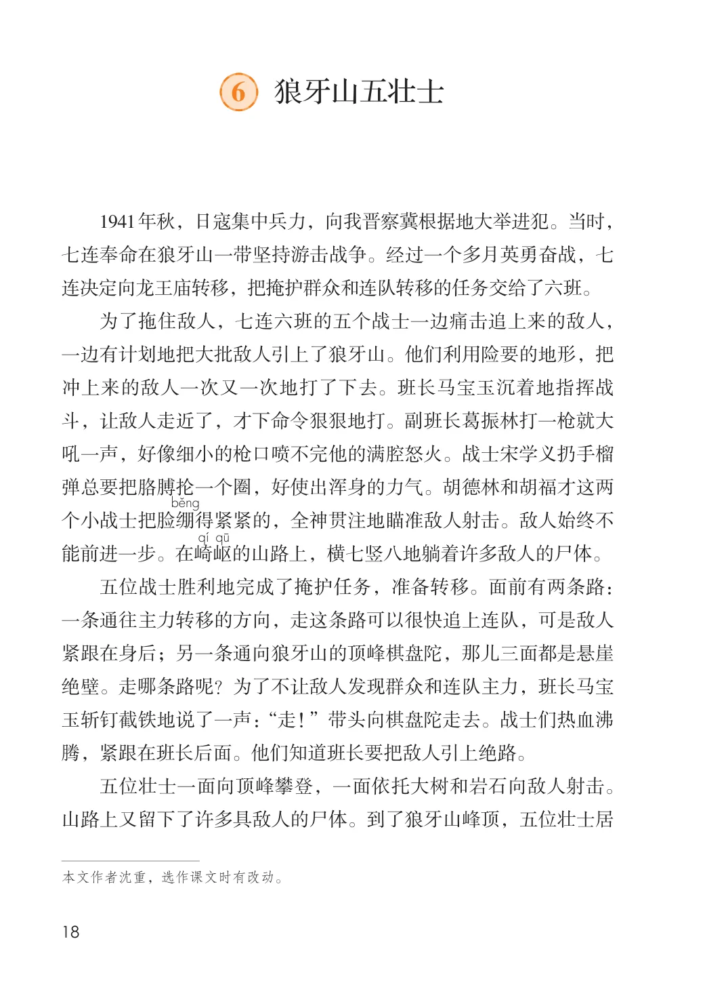
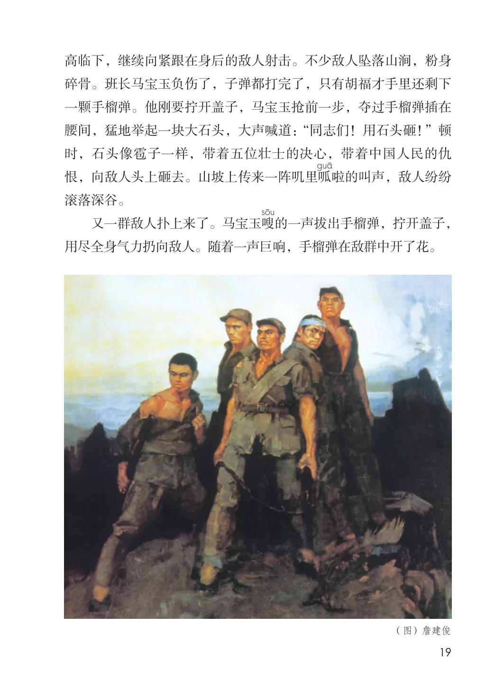
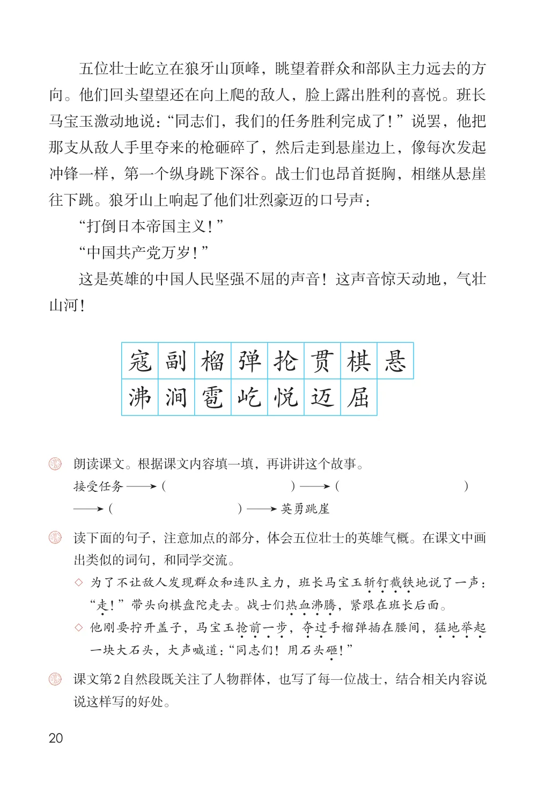

第二单元 · 第 6 课
狼牙山五壮士
文字内容 PDF 第 23 页
1941年秋，日寇集中兵力，向我晋察冀根据地大举进犯。当时，七连奉命在狼牙山一带坚持游击战争。经过一个多月英勇奋战，七连决定向龙王庙转移，把掩护群众和连队转移的任务交给了六班。
为了拖住敌人，七连六班的五个战士一边痛击追上来的敌人，一边有计划地把大批敌人引上了狼牙山。他们利用险要的地形，把冲上来的敌人一次又一次地打了下去。班长马宝玉沉着地指挥战斗，让敌人走近了，才下命令狠狠地打。副班长葛振林打一枪就大吼一声，好像细小的枪口喷不完他的满腔怒火。战士宋学义扔手榴弹总要把胳膊抡一个圈，好使出浑身的力气。胡德林和胡福才这两个小战士把脸绷得紧紧的，全神贯注地瞄准敌人射击。敌人始终不能前进一步。在崎岖的山路上，横七竖八地躺着许多敌人的尸体。
课后练习
- 五位战士胜利地完成了掩护任务，准备转移。面前有两条路：一条通往主力转移的方向，走这条路可以很快追上连队，可是敌人紧跟在身后；另一条通向狼牙山的顶峰棋盘陀，那儿三面都是悬崖绝壁。走哪条路呢？为了不让敌人发现群众和连队主力，班长马宝玉斩钉截铁地说了一声：“走！”带头向棋盘陀走去。战士们热血沸腾，紧跟在班长后面。他们知道班长要把敌人引上绝路。五位壮士一面向顶峰攀登，一面依托大树和岩石向敌人射击。山路上又留下了许多具敌人的尸体。到了狼牙山峰顶，五位壮士居
文字内容 PDF 第 24 页
高临下，继续向紧跟在身后的敌人射击。不少敌人坠落山涧，粉身碎骨。班长马宝玉负伤了，子弹都打完了，只有胡福才手里还剩下一颗手榴弹。他刚要拧开盖子，马宝玉抢前一步，夺过手榴弹插在腰间，猛地举起一块大石头，大声喊道：“同志们！用石头砸！”顿时，石头像雹子一样，带着五位壮士的决心，带着中国人民的仇恨，向敌人头上砸去。山坡上传来一阵叽里呱啦的叫声，敌人纷纷滚落深谷。
又一群敌人扑上来了。马宝玉嗖的一声拔出手榴弹，拧开盖子，用尽全身气力扔向敌人。随着一声巨响，手榴弹在敌群中开了花。
（图）詹建俊
文字内容 PDF 第 25 页
五位壮士屹立在狼牙山顶峰，眺望着群众和部队主力远去的方向。他们回头望望还在向上爬的敌人，脸上露出胜利的喜悦。班长
课后练习
- 马宝玉激动地说：“同志们，我们的任务胜利完成了！”说罢，他把那支从敌人手里夺来的枪砸碎了，然后走到悬崖边上，像每次发起冲锋一样，第一个纵身跳下深谷。战士们也昂首挺胸，相继从悬崖往下跳。狼牙山上响起了他们壮烈豪迈的口号声：“打倒日本帝国主义！”“中国共产党万岁！”这是英雄的中国人民坚强不屈的声音！这声音惊天动地，气壮山河！寇副榴弹抡贯棋悬沸涧雹屹悦迈屈
- 朗读课文。根据课文内容填一填，再讲讲这个故事。接受任务（ ）（ ）（ ）英勇跳崖
- 读下面的句子，注意加点的部分，体会五位壮士的英雄气概。在课文中画
- 出类似的词句，和同学交流。
- ◇ 为了不让敌人发现群众和连队主力，班长马宝玉斩钉截铁3 地说了一声：“走3 ！”带头向棋盘陀走去。战士们热血沸腾3 ，紧跟在班长后面。
- ◇ 他刚要拧开盖子，马宝玉抢前一步3 ，夺过3 手榴弹插在腰间，猛地举起一块大石头，大声喊道： “同志们！用石头砸3 ！”课文第2自然段既关注了人物群体，也写了每一位战士，结合相关内容说说这样写的好处。
原版对照
原书页面与全部插图
点击图片可查看大图。


